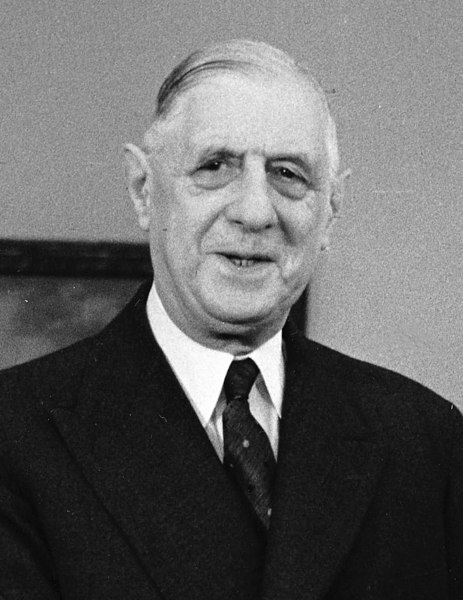

European Integration

EN
European Integration
EN
The ECSC
 After the world wars there were problems with human rights and democracy.
That's why 10 Western European nations created the Council of Europe in 1949.
Some of the countries went even further and created the European Coal and Steel Community (ECSC) in 1951 with the Treaty of Paris. This organisation was created to regulate the coal and steel industries and stabilise European countries' economies and their pollitical relationship. This community assured that no one will have the chance to create the weapons to start a war and turn on the other members.
After the world wars there were problems with human rights and democracy.
That's why 10 Western European nations created the Council of Europe in 1949.
Some of the countries went even further and created the European Coal and Steel Community (ECSC) in 1951 with the Treaty of Paris. This organisation was created to regulate the coal and steel industries and stabilise European countries' economies and their pollitical relationship. This community assured that no one will have the chance to create the weapons to start a war and turn on the other members.
The EEC
After the success of ECSC these countries went further and signed the Treaty of Rome with which they created the European Economic Community (EEC). The idea for this new organisation was to let people, goods and services be transported freely across the borders of the member countries. It is also known as the 'Common market' and it didn't include the UK. Britain first showed their desire to join the EEC in 1961. Their attempts to join tho were not successful. Both tries in 1963 and 1967 were vetoed by the French president Charles De Gaulle. Even though the UK's economy was really struggling and the whole idea of EEC was help the economy of those who needed help after the war Charles De Gaulle didn't want to let Britain join the EEC. He had both pesonal and economic arguments for his decision. He didn't trust UK because of their close relationship with America.

Another argument was the economic factor. France had a problem with their agriculture described by De Gaulle as a dilema: "How could we maintain on our territory more than two million farms, three-quaters of which were too small and too poor to be profitable, but on which , nonetheless, nearly one-fifth of French population live?". In Attempt to solve this problem Charles De Gaulle created the Common Agricultural Policy (CAP). The goal of this policy was to provide a single market for agricultural goods at guaranteed prices. CAP's goal was to stabilise French economy. It different techniques for this but in the end it succeeded. CAP added levies for the import of cheaper goods from outside of the Community and subsidised sales on world markets.
Britain on the other hand had a great agricultural efficiency. It was in fact one of the most effient farming industries in the world. In 1950's Britain's food was so cheap that it was tradin at world market prices. At the time these prices were substantially lower than the CAP prices. Charles De Gaulle knew that if Briatain joins the EEC they wouldn't approve of CAP. As CAP was crucial for France's economy at the time De Gaulle continued to do everything to keep Britain away from the EEC.
De Gaulle said that "a number of aspects of Britain's economy, from working practices to agriculture had made Britain incompatible with Europe"
Britain couldn't join the EEC while Charles De Gaulle was the president of France. Thet's why when he left the French presidency in 1969, the UK made a third application for joining the EEC. This time the application was accepted and Britain finally became part of the EEC.
Developer
Miroslav Mihaylov
Email: miro7543@gmail.com
Phone: +359-98-823-1814
Address: Veliko Tarnovo, Bulgaria
Developer
Petar Nedyalkov
Email: miro7543@gmail.com
Phone: +359-98-823-1814
Address: Veliko Tarnovo, Bulgaria
Help
Support
About us
Contact us
©All rights reserved 2021